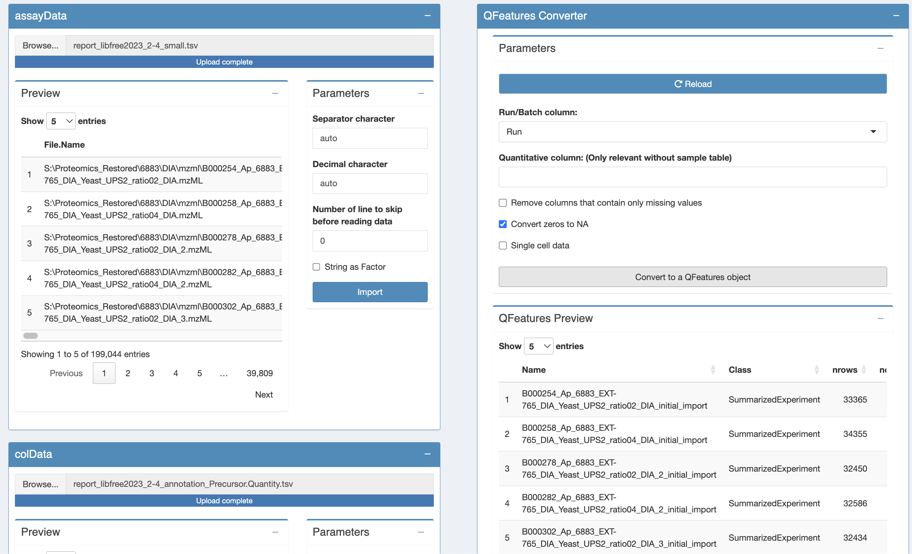
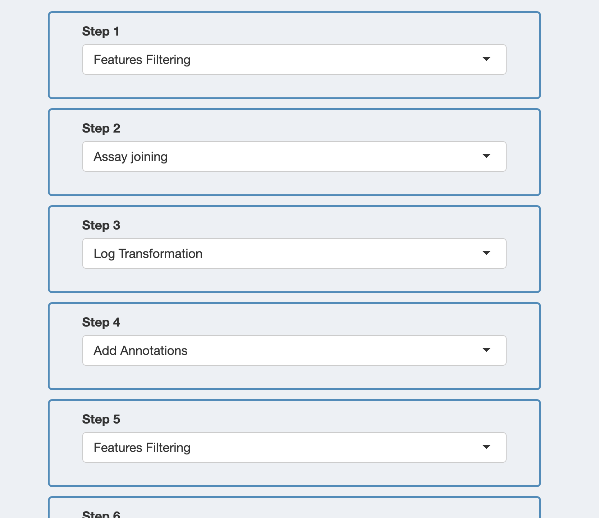
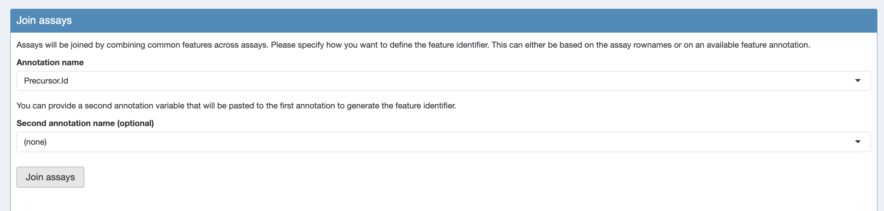

The UPS DIA Spike in A vs B dataset
The DIA case-study is a subset of Staes et al. (Staes et al. 2024).
They spiked digested UPS proteins at five different concentrations in a yeast digest background.
We will only use the data of two spikin concentrations, which we refer to as condition A and B.
- The subset of the dia-nn data can be downloaded zip file with
data.
The report file can be found in
data/quantification/ups_spikein_dia-nn.
If you use the GUI for the first time we suggest to first follow the DDA cptac vignette study prior to this DIA vignette: cptac vignette.
Data preprocessing
Before analysing the data, we must perform data preprocessing. The
will ensure the data meet our model assumptions. Data import and
preprocessing is performed by the QFeaturesGUI application.
Open QFeaturesGUI
Run the following command (like above):
QFeaturesGUI::importQFeatures()
Import the data
Our MS-based proteomics data analysis workflows always start with 2
pieces of data:
The search engine output. In this tutorial, we will use the
identified and quantified peptide data by DIA-NN, called
peptides.txt.
An annotation file describing the experimental design. Each line
corresponds to a sample and each column provides a sample
annotation.
The main difference with the peptide.txt file of MaxQuant is that the DIA-NN report file is a flat file while the MaxQuant peptide.txt file is a wide file.
This will involve an additional step in the data preprocessing.
When importing a flat file in the QFeaturesGUI will store the data of each run in a separate assay.
We will then join the assays of each of the runs in a separate assay.
Similarly as in the CPTAC vignette, we will
first import the DIA-NN data in the assayData tab: report_libfree2023_2-4_small.tsv and
The corresponding experimental annotation file report_libfree2023_2-4_annotation_Precursor.Quantity.tsv in the colData tab. The annotation file contains a variable quantCols that refers to the Precursor.Quantity column from DIA-NN, which provide the MS2 quantifications. If you want to work with the MS1 quantifications you need to use Ms1.Area in the variable quantCols (see report_libfree2023_2-4_annotation_Ms1.Area). Because the DIA-NN report file is a flat file the annotation file also have to provide a column with the information of the run names in the annotation file. The name of the latter column has to be runCol.
Finaly we import the data in a QFeatures object using the QFeatures converter tab.
Note, in the QFeatures tab we also have to indicate the name of the run column in the assayData for files in a flat format. For DIA-NN data this column is named run.

Note, that multiple assays are created. One for each run.
Configuring the preprocessing worflow
Move to the next table by clicking on “Pre-Processing Configuration”
in the menu to the left. Click on the green button “+” to add a step.
In this tutorial, you will need to add 9 steps in total.
Two steps more then for the cptac vignette:
An additional feature filtering step to retain precursors that have not been identified, which have a low Q value (low FDR for identification) or a low protein group Q value.
A step to join the assays of the different runs in a single assay.
You should
parameterise them as follows:
- Feature filtering
- Join assays
- Log Transformation
- Add Annotations
- Features filtering
- Normalisation
- Aggregation
- Add Annotations
- Features filtering
You can now click the “Confirm Current Workflow” button. On the left
menu, you will see that the 3rd entry now mentions “3 Pre-processing
(9 Steps)”. We will now configure and run each of these steps.

Figure 2. The preprocessing workflow upon configuration
Step 1: Feature filtering
Note that the PCA plots will fail because every run only contains information about 1 run.
Add three filtering boxes.
- Box to retain precursors that have been identified:
Precursor.Id !=
- Box to retain precursors with a Q-value below 0.01:
Q.Value <= 0.01
- Box to retain precursors with a Q-value below 0.01:
PG.Q.Value <= 0.01
Then we perform the filtering and save the assay:
4. Click apply filters
5. Click save the processed assays
Step 2: Assay joining
- Click
Load assays from previous steps
- Select the
Precursor.Id column as the annotation name
- Click
join assays
- Click
save the processed assays

Figure 3. Assay joining
Step 4: add annotations
Similar to the cptac vignette we add the annotation on the missing values.
Step 5: precursor filtering
We filter the precursors based on the number of NAs.
Again we want only precursors that were observed in at least 3 runs so nNA has to be smaller or equal to than 6-3 = 3 .
nNA <= 3
With DIA-NN you can keep the precursors that only map to one protein:
Proteotypic == 1
In the “Filtering Summary” tile, click the “Apply Filters” button.
Click the button to save the processed data.
Step 6: Normalisation
Again we normalise the data as in the previous vignette by using median centering.
Step 7: Summarisation
Again we summarize the data as in the previous vignette us Protein.Ids to aggregate the precursor-level data in a protein-level expression value.
Step 8: add annotations
Repeat step 2, this will allow to perform a filtering on missing, but
at the protein-level instead of peptide-level.
Step 9: protein filtering
Again, we will remove proteins that were identified in less
than 4 samples so that for most proteins at least two protein-level expression values are observed in each treatment group.
So we will tolerate at most 6-4 = 2 missing values at the protein-level.
Save your progress
You now have completed the data processing. You can move to the
Summary tab (in the left menu). There you will find an overview of the
data and the data processing steps.
Go to the bottom of the page and click on the “Download QFeatures”
button. A pop up windown will ask you to select a directory to store
the resulting file. By default the file is called
qfeatures_object.rds, but feel free to rename as you wish but you
cannot change the file extension (.rds).
You can now close the application.
LS0tCnRpdGxlOiAiSW50cm9kdWN0aW9uIHRvIHByb3Rlb21pY3MgZGF0YSBhbmFseXNpcyIKc3VidGl0bGU6ICJJbXBhY3Qgb2Ygc3VtbWFyaXNhdGlvbiIKYXV0aG9yOiAiTGlldmVuIENsZW1lbnQiCmRhdGU6ICJzdGF0T21pY3MsIEdoZW50IFVuaXZlcnNpdHkgKGh0dHBzOi8vc3RhdG9taWNzLmdpdGh1Yi5pbykiCm91dHB1dDoKICAgIGh0bWxfZG9jdW1lbnQ6CiAgICAgIHRoZW1lOiBmbGF0bHkgICAgICAKICAgICAgY29kZV9kb3dubG9hZDogZmFsc2UKICAgICAgdG9jOiBmYWxzZQogICAgICB0b2NfZmxvYXQ6IGZhbHNlCiAgICAgIG51bWJlcl9zZWN0aW9uczogZmFsc2UKYmlibGlvZ3JhcGh5OiBtc3Fyb2IyLmJpYgotLS0KCjxhIHJlbD0ibGljZW5zZSIgaHJlZj0iaHR0cHM6Ly9jcmVhdGl2ZWNvbW1vbnMub3JnL2xpY2Vuc2VzL2J5LW5jLXNhLzQuMCI+PGltZyBhbHQ9IkNyZWF0aXZlIENvbW1vbnMgTGljZW5zZSIgc3R5bGU9ImJvcmRlci13aWR0aDowIiBzcmM9Imh0dHBzOi8vaS5jcmVhdGl2ZWNvbW1vbnMub3JnL2wvYnktbmMtc2EvNC4wLzg4eDMxLnBuZyIgLz48L2E+CgojIyBUaGUgVVBTIERJQSBTcGlrZSBpbiBBIHZzIEIgZGF0YXNldAoKVGhlIERJQSBjYXNlLXN0dWR5IGlzIGEgc3Vic2V0IG9mIFN0YWVzIGV0IGFsLiBbQFN0YWVzMjAyNF0uIApUaGV5IHNwaWtlZCBkaWdlc3RlZCBVUFMgcHJvdGVpbnMgYXQgZml2ZSBkaWZmZXJlbnQgY29uY2VudHJhdGlvbnMgaW4gYSB5ZWFzdCBkaWdlc3QgYmFja2dyb3VuZC4gCldlIHdpbGwgb25seSB1c2UgdGhlIGRhdGEgb2YgdHdvIHNwaWtpbiBjb25jZW50cmF0aW9ucywgd2hpY2ggd2UgcmVmZXIgdG8gYXMgY29uZGl0aW9uIEEgYW5kIEIuIAoKLSBUaGUgc3Vic2V0IG9mIHRoZSBkaWEtbm4gZGF0YSBjYW4gYmUgZG93bmxvYWRlZCBbemlwIGZpbGUgd2l0aCAKICBkYXRhXShodHRwczovL2dpdGh1Yi5jb20vc3RhdE9taWNzL1BEQTI1RUJJL2FyY2hpdmUvcmVmcy9oZWFkcy9kYXRhLnppcCkuCiAgVGhlIHJlcG9ydCBmaWxlIGNhbiBiZSBmb3VuZCBpbiAKICBgZGF0YS9xdWFudGlmaWNhdGlvbi91cHNfc3Bpa2Vpbl9kaWEtbm5gLgogIApJZiB5b3UgdXNlIHRoZSBHVUkgZm9yIHRoZSBmaXJzdCB0aW1lIHdlIHN1Z2dlc3QgdG8gZmlyc3QgZm9sbG93IHRoZSBEREEgY3B0YWMgdmlnbmV0dGUgc3R1ZHkgcHJpb3IgdG8gdGhpcyBESUEgdmlnbmV0dGU6IFtjcHRhYyB2aWduZXR0ZV0oLi9jcHRhY19yb2J1c3RfZ3VpLmh0bWwpLiAKCgojIyBEYXRhIHByZXByb2Nlc3NpbmcKCkJlZm9yZSBhbmFseXNpbmcgdGhlIGRhdGEsIHdlIG11c3QgcGVyZm9ybSBkYXRhIHByZXByb2Nlc3NpbmcuIFRoZQp3aWxsIGVuc3VyZSB0aGUgZGF0YSBtZWV0IG91ciBtb2RlbCBhc3N1bXB0aW9ucy4gRGF0YSBpbXBvcnQgYW5kCnByZXByb2Nlc3NpbmcgaXMgcGVyZm9ybWVkIGJ5IHRoZSBgUUZlYXR1cmVzR1VJYCBhcHBsaWNhdGlvbi4KCiMjIyBPcGVuIGBRRmVhdHVyZXNHVUlgIAoKUnVuIHRoZSBmb2xsb3dpbmcgY29tbWFuZCAobGlrZSBhYm92ZSk6CgpgYGB7ciwgZXZhbD1GQUxTRX0KUUZlYXR1cmVzR1VJOjppbXBvcnRRRmVhdHVyZXMoKQpgYGAKCgojIyMgSW1wb3J0IHRoZSBkYXRhCgpPdXIgTVMtYmFzZWQgcHJvdGVvbWljcyBkYXRhIGFuYWx5c2lzIHdvcmtmbG93cyBhbHdheXMgc3RhcnQgd2l0aCAyIApwaWVjZXMgb2YgZGF0YTogCgoxLiBUaGUgc2VhcmNoIGVuZ2luZSBvdXRwdXQuIEluIHRoaXMgdHV0b3JpYWwsIHdlIHdpbGwgdXNlIHRoZQogICBpZGVudGlmaWVkIGFuZCBxdWFudGlmaWVkIHBlcHRpZGUgZGF0YSBieSBESUEtTk4sIGNhbGxlZAogICBgcGVwdGlkZXMudHh0YC4KICAgCjIuIEFuIGFubm90YXRpb24gZmlsZSBkZXNjcmliaW5nIHRoZSBleHBlcmltZW50YWwgZGVzaWduLiBFYWNoIGxpbmUKICAgY29ycmVzcG9uZHMgdG8gYSBzYW1wbGUgYW5kIGVhY2ggY29sdW1uIHByb3ZpZGVzIGEgc2FtcGxlIAogICBhbm5vdGF0aW9uLgoKVGhlIG1haW4gZGlmZmVyZW5jZSB3aXRoIHRoZSBwZXB0aWRlLnR4dCBmaWxlIG9mIE1heFF1YW50IGlzIHRoYXQgdGhlIERJQS1OTiByZXBvcnQgZmlsZSBpcyBhIGZsYXQgZmlsZSB3aGlsZSB0aGUgTWF4UXVhbnQgcGVwdGlkZS50eHQgZmlsZSBpcyBhIHdpZGUgZmlsZS4gCgpUaGlzIHdpbGwgaW52b2x2ZSBhbiBhZGRpdGlvbmFsIHN0ZXAgaW4gdGhlIGRhdGEgcHJlcHJvY2Vzc2luZy4gCgpXaGVuIGltcG9ydGluZyBhIGZsYXQgZmlsZSBpbiB0aGUgUUZlYXR1cmVzR1VJIHdpbGwgc3RvcmUgdGhlIGRhdGEgb2YgZWFjaCBydW4gaW4gYSBzZXBhcmF0ZSBhc3NheS4gCgpXZSB3aWxsIHRoZW4gam9pbiB0aGUgYXNzYXlzIG9mIGVhY2ggb2YgdGhlIHJ1bnMgaW4gYSBzZXBhcmF0ZSBhc3NheS4gCgpTaW1pbGFybHkgYXMgaW4gdGhlIENQVEFDIHZpZ25ldHRlLCB3ZSB3aWxsIAoKMS4gZmlyc3QgaW1wb3J0IHRoZSBESUEtTk4gZGF0YSBpbiB0aGUgYXNzYXlEYXRhIHRhYjogYHJlcG9ydF9saWJmcmVlMjAyM18yLTRfc21hbGwudHN2YCBhbmQgCjIuIFRoZSBjb3JyZXNwb25kaW5nIGV4cGVyaW1lbnRhbCBhbm5vdGF0aW9uIGZpbGUgYHJlcG9ydF9saWJmcmVlMjAyM18yLTRfYW5ub3RhdGlvbl9QcmVjdXJzb3IuUXVhbnRpdHkudHN2YCBpbiB0aGUgY29sRGF0YSB0YWIuIFRoZSBhbm5vdGF0aW9uIGZpbGUgY29udGFpbnMgYSB2YXJpYWJsZSBxdWFudENvbHMgdGhhdCByZWZlcnMgdG8gdGhlIFByZWN1cnNvci5RdWFudGl0eSBjb2x1bW4gZnJvbSBESUEtTk4sIHdoaWNoIHByb3ZpZGUgdGhlIE1TMiBxdWFudGlmaWNhdGlvbnMuIElmIHlvdSB3YW50IHRvIHdvcmsgd2l0aCB0aGUgTVMxIHF1YW50aWZpY2F0aW9ucyB5b3UgbmVlZCB0byB1c2UgYE1zMS5BcmVhYCBpbiB0aGUgdmFyaWFibGUgcXVhbnRDb2xzIChzZWUgcmVwb3J0X2xpYmZyZWUyMDIzXzItNF9hbm5vdGF0aW9uX01zMS5BcmVhKS4gQmVjYXVzZSB0aGUgRElBLU5OIHJlcG9ydCBmaWxlIGlzIGEgZmxhdCBmaWxlIHRoZSBhbm5vdGF0aW9uIGZpbGUgYWxzbyBoYXZlIHRvIHByb3ZpZGUgYSBjb2x1bW4gd2l0aCB0aGUgaW5mb3JtYXRpb24gb2YgdGhlIHJ1biBuYW1lcyBpbiB0aGUgYW5ub3RhdGlvbiBmaWxlLiBUaGUgbmFtZSBvZiB0aGUgbGF0dGVyIGNvbHVtbiBoYXMgdG8gYmUgYHJ1bkNvbGAuIAoKMy4gRmluYWx5IHdlIGltcG9ydCB0aGUgZGF0YSBpbiBhIFFGZWF0dXJlcyBvYmplY3QgdXNpbmcgdGhlIFFGZWF0dXJlcyBjb252ZXJ0ZXIgdGFiLiAKTm90ZSwgaW4gdGhlIFFGZWF0dXJlcyB0YWIgd2UgYWxzbyBoYXZlIHRvIGluZGljYXRlIHRoZSBuYW1lIG9mIHRoZSBydW4gY29sdW1uIGluIHRoZSBhc3NheURhdGEgZm9yIGZpbGVzIGluIGEgZmxhdCBmb3JtYXQuIEZvciBESUEtTk4gZGF0YSB0aGlzIGNvbHVtbiBpcyBuYW1lZCBgcnVuYC4KCgohW0ZpZ3VyZSAxLiBUaGUgUUZlYXR1cmVzIG9iamVjdCBpcyBzdWNjZXNzZnVsbHkgY29udmVydGVkXSguL2ZpZ3VyZXMvcWZlYXR1cmVzX2ltcG9ydGVkX2RpYW5uLnBuZykKTm90ZSwgdGhhdCBtdWx0aXBsZSBhc3NheXMgYXJlIGNyZWF0ZWQuIE9uZSBmb3IgZWFjaCBydW4uIAoKIyMjIENvbmZpZ3VyaW5nIHRoZSBwcmVwcm9jZXNzaW5nIHdvcmZsb3cKCk1vdmUgdG8gdGhlIG5leHQgdGFibGUgYnkgY2xpY2tpbmcgb24gIlByZS1Qcm9jZXNzaW5nIENvbmZpZ3VyYXRpb24iCmluIHRoZSBtZW51IHRvIHRoZSBsZWZ0LiBDbGljayBvbiB0aGUgZ3JlZW4gYnV0dG9uICIrIiB0byBhZGQgYSBzdGVwLgpJbiB0aGlzIHR1dG9yaWFsLCB5b3Ugd2lsbCBuZWVkIHRvIGFkZCA5IHN0ZXBzIGluIHRvdGFsLiAKVHdvIHN0ZXBzIG1vcmUgdGhlbiBmb3IgdGhlIGNwdGFjIHZpZ25ldHRlOiAKCi0gQW4gYWRkaXRpb25hbCBmZWF0dXJlIGZpbHRlcmluZyBzdGVwIHRvIHJldGFpbiBwcmVjdXJzb3JzIHRoYXQgaGF2ZSBub3QgYmVlbiBpZGVudGlmaWVkLCB3aGljaCBoYXZlIGEgbG93IFEgdmFsdWUgKGxvdyBGRFIgZm9yIGlkZW50aWZpY2F0aW9uKSBvciBhIGxvdyBwcm90ZWluIGdyb3VwIFEgdmFsdWUuIAoKLSBBIHN0ZXAgdG8gam9pbiB0aGUgYXNzYXlzIG9mIHRoZSBkaWZmZXJlbnQgcnVucyBpbiBhIHNpbmdsZSBhc3NheS4gCgpZb3Ugc2hvdWxkCnBhcmFtZXRlcmlzZSB0aGVtIGFzIGZvbGxvd3M6CgoxLiBGZWF0dXJlIGZpbHRlcmluZwoyLiBKb2luIGFzc2F5cwozLiBMb2cgVHJhbnNmb3JtYXRpb24KNC4gQWRkIEFubm90YXRpb25zCjUuIEZlYXR1cmVzIGZpbHRlcmluZwo2LiBOb3JtYWxpc2F0aW9uCjcuIEFnZ3JlZ2F0aW9uCjguIEFkZCBBbm5vdGF0aW9ucwo5LiBGZWF0dXJlcyBmaWx0ZXJpbmcKCgpZb3UgY2FuIG5vdyBjbGljayB0aGUgIkNvbmZpcm0gQ3VycmVudCBXb3JrZmxvdyIgYnV0dG9uLiBPbiB0aGUgbGVmdAptZW51LCB5b3Ugd2lsbCBzZWUgdGhhdCB0aGUgM3JkIGVudHJ5IG5vdyBtZW50aW9ucyAiMyBQcmUtcHJvY2Vzc2luZwooOSBTdGVwcykiLiBXZSB3aWxsIG5vdyBjb25maWd1cmUgYW5kIHJ1biBlYWNoIG9mIHRoZXNlIHN0ZXBzLgoKCiFbRmlndXJlIDIuIFRoZSBwcmVwcm9jZXNzaW5nIHdvcmtmbG93IHVwb24gY29uZmlndXJhdGlvbl0oLi9maWd1cmVzL3ByZXByb2Nlc3NpbmdfY29uZmlndXJhdGlvbl9kaWFubi5wbmcpCgojIyMgU3RlcCAxOiBGZWF0dXJlIGZpbHRlcmluZyAKCk5vdGUgdGhhdCB0aGUgUENBIHBsb3RzIHdpbGwgZmFpbCBiZWNhdXNlIGV2ZXJ5IHJ1biBvbmx5IGNvbnRhaW5zIGluZm9ybWF0aW9uIGFib3V0IDEgcnVuLiAKCkFkZCB0aHJlZSBmaWx0ZXJpbmcgYm94ZXMuIAoKMS4gQm94IHRvIHJldGFpbiBwcmVjdXJzb3JzIHRoYXQgaGF2ZSBiZWVuIGlkZW50aWZpZWQ6IGBQcmVjdXJzb3IuSWQgIT0gYCAKMi4gQm94IHRvIHJldGFpbiBwcmVjdXJzb3JzIHdpdGggYSBRLXZhbHVlIGJlbG93IDAuMDE6IGBRLlZhbHVlIDw9IDAuMDFgCjMuIEJveCB0byByZXRhaW4gcHJlY3Vyc29ycyB3aXRoIGEgUS12YWx1ZSBiZWxvdyAwLjAxOiBgUEcuUS5WYWx1ZSA8PSAwLjAxYAoKVGhlbiB3ZSBwZXJmb3JtIHRoZSBmaWx0ZXJpbmcgYW5kIHNhdmUgdGhlIGFzc2F5OiAKNC4gQ2xpY2sgYGFwcGx5IGZpbHRlcnNgCjUuIENsaWNrIGBzYXZlIHRoZSBwcm9jZXNzZWQgYXNzYXlzYAoKIyMjIFN0ZXAgMjogQXNzYXkgam9pbmluZwoKMS4gQ2xpY2sgYExvYWQgYXNzYXlzIGZyb20gcHJldmlvdXMgc3RlcHNgCjIuIFNlbGVjdCB0aGUgYFByZWN1cnNvci5JZGAgY29sdW1uIGFzIHRoZSBhbm5vdGF0aW9uIG5hbWUKMy4gQ2xpY2sgYGpvaW4gYXNzYXlzYAo0LiBDbGljayBgc2F2ZSB0aGUgcHJvY2Vzc2VkIGFzc2F5c2AKCiFbRmlndXJlIDMuIEFzc2F5IGpvaW5pbmddKC4vZmlndXJlcy9hc3NheWpvaW5pbmcucG5nKQoKIyMjIFN0ZXAgMzogTG9nIHRyYW5zZm9ybWF0aW9uCgpTaW1pbGFyIHRvIHRoZSBjcHRhYyB2aWduZXR0ZSB3ZSBsb2cgdHJhbnNmb3JtIHRoZSBkYXRhLiAKCk9uY2UgeW91IGFyZSBkb25lLCBjbGljayB0aGUgIlNhdmUgdGhlIHByb2Nlc3NlZCBkYXRhIiBidXR0b24uIAoKIyMjIFN0ZXAgNDogYWRkIGFubm90YXRpb25zCgpTaW1pbGFyIHRvIHRoZSBjcHRhYyB2aWduZXR0ZSB3ZSBhZGQgdGhlIGFubm90YXRpb24gb24gdGhlIG1pc3NpbmcgdmFsdWVzLiAKCiMjIyBTdGVwIDU6IHByZWN1cnNvciBmaWx0ZXJpbmcKCjEuIFdlIGZpbHRlciB0aGUgcHJlY3Vyc29ycyBiYXNlZCBvbiB0aGUgbnVtYmVyIG9mIE5Bcy4gCkFnYWluIHdlIHdhbnQgb25seSBwcmVjdXJzb3JzIHRoYXQgd2VyZSBvYnNlcnZlZCBpbiBhdCBsZWFzdCAzIHJ1bnMgc28gbk5BIGhhcyB0byBiZSBzbWFsbGVyIG9yIGVxdWFsIHRvIHRoYW4gNi0zID0gMyAuIApgbk5BIDw9IDNgCgoyLiBXaXRoIERJQS1OTiB5b3UgY2FuIGtlZXAgdGhlIHByZWN1cnNvcnMgdGhhdCBvbmx5IG1hcCB0byBvbmUgcHJvdGVpbjogCmBQcm90ZW90eXBpYyA9PSAxYAozLiBJbiB0aGUgIkZpbHRlcmluZyBTdW1tYXJ5IiB0aWxlLCBjbGljayB0aGUgIkFwcGx5IEZpbHRlcnMiIGJ1dHRvbi4KNC4gQ2xpY2sgdGhlIGJ1dHRvbiB0byBzYXZlIHRoZSBwcm9jZXNzZWQgZGF0YS4KCgojIyMgU3RlcCA2OiBOb3JtYWxpc2F0aW9uCgpBZ2FpbiB3ZSBub3JtYWxpc2UgdGhlIGRhdGEgYXMgaW4gdGhlIHByZXZpb3VzIHZpZ25ldHRlIGJ5IHVzaW5nIG1lZGlhbiBjZW50ZXJpbmcuIAoKIyMjIFN0ZXAgNzogU3VtbWFyaXNhdGlvbgoKQWdhaW4gd2Ugc3VtbWFyaXplIHRoZSBkYXRhIGFzIGluIHRoZSBwcmV2aW91cyB2aWduZXR0ZSB1cyBgUHJvdGVpbi5JZHNgIHRvIGFnZ3JlZ2F0ZSB0aGUgcHJlY3Vyc29yLWxldmVsIGRhdGEgaW4gYSBwcm90ZWluLWxldmVsIGV4cHJlc3Npb24gdmFsdWUuIAoKIyMjIFN0ZXAgODogYWRkIGFubm90YXRpb25zCgpSZXBlYXQgc3RlcCAyLCB0aGlzIHdpbGwgYWxsb3cgdG8gcGVyZm9ybSBhIGZpbHRlcmluZyBvbiBtaXNzaW5nLCBidXQKYXQgdGhlIHByb3RlaW4tbGV2ZWwgaW5zdGVhZCBvZiBwZXB0aWRlLWxldmVsLgoKIyMjIFN0ZXAgOTogcHJvdGVpbiBmaWx0ZXJpbmcKCkFnYWluLCB3ZSB3aWxsIHJlbW92ZSBwcm90ZWlucyB0aGF0IHdlcmUgaWRlbnRpZmllZCBpbiBsZXNzCnRoYW4gNCBzYW1wbGVzIHNvIHRoYXQgZm9yIG1vc3QgcHJvdGVpbnMgYXQgbGVhc3QgdHdvIHByb3RlaW4tbGV2ZWwgZXhwcmVzc2lvbiB2YWx1ZXMgYXJlIG9ic2VydmVkIGluIGVhY2ggdHJlYXRtZW50IGdyb3VwLiAKClNvIHdlIHdpbGwgdG9sZXJhdGUgYXQgbW9zdCA2LTQgPSAyIG1pc3NpbmcgdmFsdWVzIGF0IHRoZSBwcm90ZWluLWxldmVsLiAKCiMjIyBTYXZlIHlvdXIgcHJvZ3Jlc3MKCllvdSBub3cgaGF2ZSBjb21wbGV0ZWQgdGhlIGRhdGEgcHJvY2Vzc2luZy4gWW91IGNhbiBtb3ZlIHRvIHRoZQpTdW1tYXJ5IHRhYiAoaW4gdGhlIGxlZnQgbWVudSkuIFRoZXJlIHlvdSB3aWxsIGZpbmQgYW4gb3ZlcnZpZXcgb2YgdGhlCmRhdGEgYW5kIHRoZSBkYXRhIHByb2Nlc3Npbmcgc3RlcHMuCgpHbyB0byB0aGUgYm90dG9tIG9mIHRoZSBwYWdlIGFuZCBjbGljayBvbiB0aGUgIkRvd25sb2FkIFFGZWF0dXJlcyIKYnV0dG9uLiBBIHBvcCB1cCB3aW5kb3duIHdpbGwgYXNrIHlvdSB0byBzZWxlY3QgYSBkaXJlY3RvcnkgdG8gc3RvcmUKdGhlIHJlc3VsdGluZyBmaWxlLiBCeSBkZWZhdWx0IHRoZSBmaWxlIGlzIGNhbGxlZApgcWZlYXR1cmVzX29iamVjdC5yZHNgLCBidXQgZmVlbCBmcmVlIHRvIHJlbmFtZSBhcyB5b3Ugd2lzaCBidXQgeW91CmNhbm5vdCBjaGFuZ2UgdGhlIGZpbGUgZXh0ZW5zaW9uIChgLnJkc2ApLgoKWW91IGNhbiBub3cgY2xvc2UgdGhlIGFwcGxpY2F0aW9uLgoKIyMgU3RhdGlzdGljYWwgYW5hbHlzaXMKCiMjIyBPcGVuIGBtc3Fyb2IyZ3VpYCAKClRoZSBkaWZmZXJlbnRpYWwgYW5hbHlzaXMgaW4gdGhlIG1zcXJvYjJndWkgcmVtYWlucyBzaW1pbGFyIHRvIHRoZSBwcmV2aW91cyB2aWduZXR0ZSBhbmQgdHV0b3JpYWxzLiAK